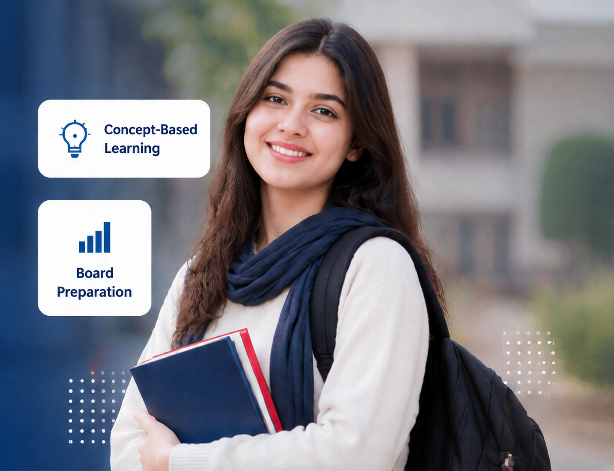
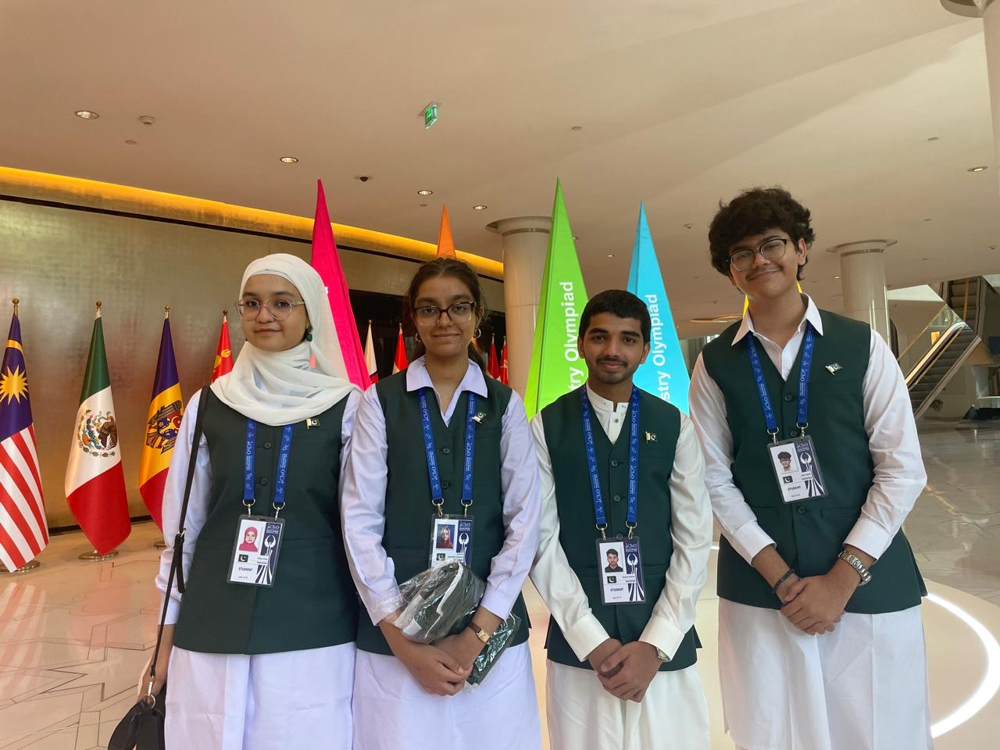
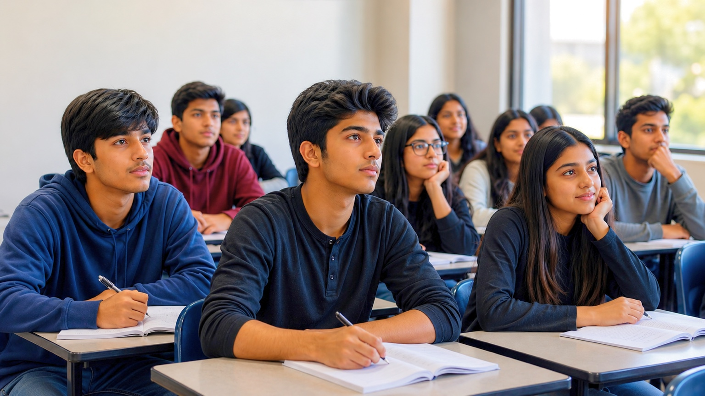

Class 9 • Class 10
Strong foundation for the two Matric years.
Concept-based teaching, disciplined practice and board-focused preparation.
View Program →Part of Pakistan’s Largest Educational & Entry Test Preparation Network
A focused academic environment for Matric, FSc, ICS and Entry Test Preparation — built around conceptual clarity, board excellence and strong future readiness.

Focused classroom teaching, regular testing and academic follow-up across the stages that matter most — within a disciplined and professional learning environment.
Strong foundation for the two Matric years.
Concept-based teaching, disciplined practice and board-focused preparation.
View Program →Part I • Part II
Structured Intermediate preparation with strong conceptual depth and regular assessment.
View Program →Part I • Part II
A focused computing pathway supported by mathematics, physics and conceptual learning.
View Program →University Entry Tests
Competitive preparation designed to connect academic learning with university admission goals.
View Program →A proud moment for STEP Academy Thokar Niaz Baig Campus — one of our students represented Pakistan at one of the world’s most prestigious science competitions.
Rida Umar, a student of STEP Academy Thokar Niaz Baig Campus, was selected among only four students from Pakistan to represent the country at the 58th International Chemistry Olympiad (IChO 2026).
This prestigious event was held in Tashkent, Uzbekistan, bringing together talented young students from around the world. Her selection reflects academic excellence, dedication and scientific potential.
Her achievement is a source of inspiration for our students and a reflection of the academic vision of STEP Academy.

Physical lectures remain at the core of STEP Academy. Strong faculty, structured testing, disciplined routines and close academic follow-up create the environment students need to progress consistently.
A Project of Punjab Group of CollegesExperienced teachers with strong subject command and a clear focus on student understanding and performance.
Well-planned classroom teaching with concept clarity, board orientation and progression across the syllabus.
Frequent assessments identify gaps early, reinforce preparation and keep academic progress measurable.
A focused atmosphere where classroom seriousness, punctuality and academic routines support better learning.
Attendance, preparation and academic performance are followed consistently rather than left to chance.
Students receive guidance and follow-up so that individual weaknesses can be addressed before they grow.

A disciplined classroom environment where students stay attentive, participate actively and develop strong concepts through focused teaching.
Physical classroom lectures remain at the core. The STEP Learning Hub gives students an additional way to revisit concepts, practise MCQs and reinforce important ideas after class.
Interactive LearningVisual explanations and digital concept support.
Structured Testing & PracticeRegular tests and focused practice to reinforce learning and identify gaps.
Practice MCQsImmediate feedback and focused revision.
Beyond the LectureKey ideas reinforced after classroom teaching.
Concept ReviewsConcise summaries for quick and effective revision.
Explore vertical and horizontal stretching and compression through point-by-point interactive animations.
Open Interactive Lesson →Built for learning beyond the classroom.Accessible on phone, tablet and desktop.
A connected student system that brings together lectures, schedules, attendance, testing and academic progress — helping students and families stay informed throughout the session.
Recorded LecturesRevisit important classroom content when needed.
Scheme of StudiesFollow the planned academic sequence and day-wise progress.
Results & AnalyticsReview test performance and identify areas that need attention.
Attendance RecordKeep track of attendance and academic regularity.
Timetable & ScheduleStay updated with classes, tests and upcoming academic activities.
Complete Academic ReportSee progress through one connected academic record.
One connected student system.Lectures • Attendance • Results • Schedule • Progress
Short, focused quizzes complement classroom teaching by giving students another opportunity to check understanding and reinforce concepts after the lecture.
Open MCQ Practice ↗CorrectA short explanation reinforces the concept.
Speak with our campus team about classes, combinations, schedules and admission guidance.
Conveniently located in Westwood Colony, serving students from Thokar Niaz Baig and nearby communities.
177 Westwood Colony, Thokar Niaz Baig, Lahore
www.stepacademythokar.pk
Admissions Announcement
Classes 9 & 10 FSc & ICS
Join STEP Academy Thokar Niaz Baig Campus for concept-based learning, experienced faculty, regular testing, and a disciplined academic environment.